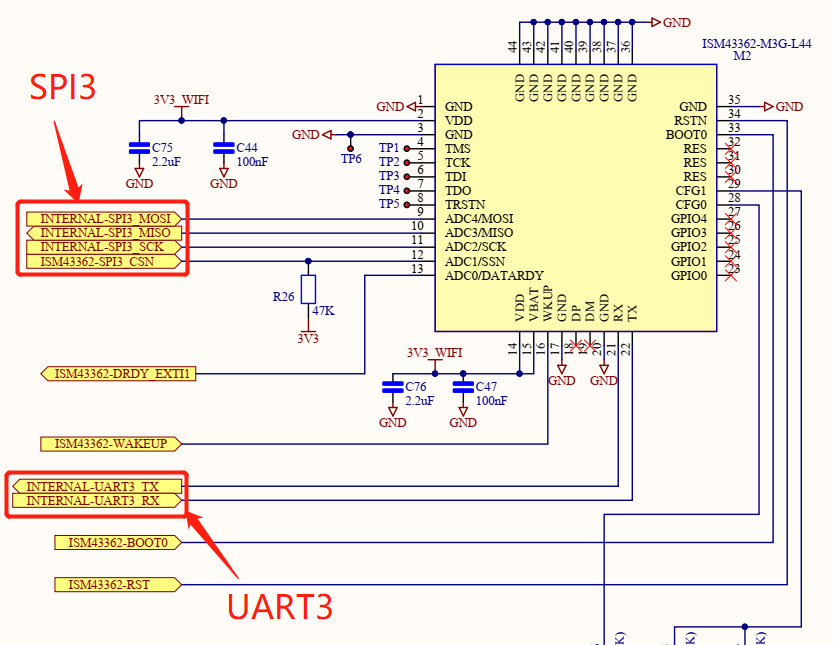
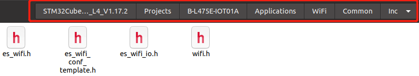
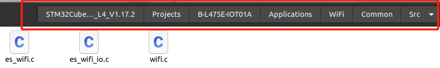
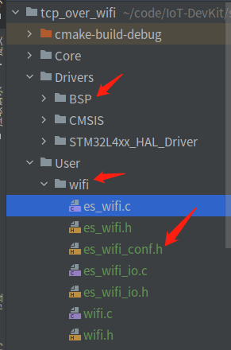
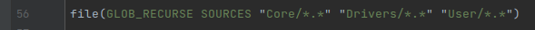
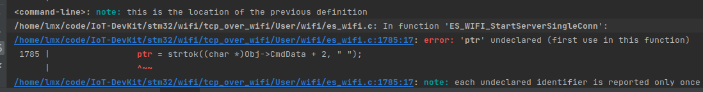
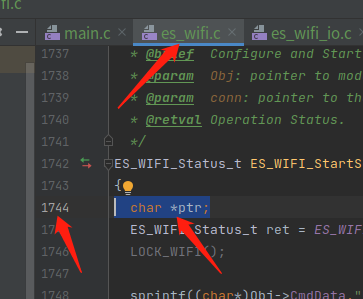
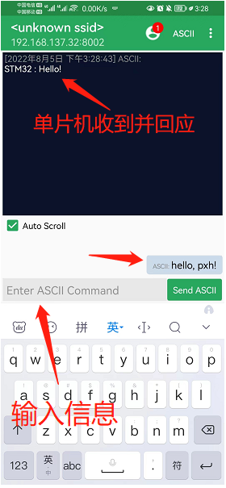

TCP over WiFi#
B-L475E-IOT01A 板载的 WiFi 模块为 ISM43362-M3G-L44，其内部集成了 TCP/IP 协议栈，只需简单的 AT 指令即可建立无线连接。ISM43362-M3G-L44 可通过 UART 或 SPI 接口与单片机通信。那这个时候同学们就会有疑问了:thinking:，平时在单片机上用的 WiFi 透传模块几乎都是 UART 的，这款为什么有个 SPI 接口呢？
众所周知啊，单片机高速 WiFi 通信传输，是难以实现的，原因一般在于：
支持高速通信的 WiFi 模块，一般是 USB、SDIO、或PCIE 接口，这些接口一般出现在 Cortex-A 系列的芯片，大多数 Cortex-M 系列的普通单片机是没有这种接口的。
即使某些单片机提供了这些接口，单片机和 WiFi模块的通信编程也会变得非常复杂，并造成单片机选型的成本增加。
普通单片机因资源（性能和存储）有限，难以支持实用的、较好性能的单片机 WiFi 方案。
所以，大多数用在单片机系统上的 WiFi 模块，要么是以 UART 为主的，只能做一些基本的低速控制命令的传输，或者费了九牛二虎之力，集成了 USB、 SDIO、或 PCIE 接口的 WIFI 模块，但效果也很一般，且造价昂贵。因此，在普通单片机上做高速 WiFi 通信（类似 ESP32 这种自带 WiFi 的芯片不在讨论范围内）是难以实现的，而通过 SPI 方式传输，就可以改变这种情况。原因在于 SPI 为全双工通信，传输速率可达几 Mbps，并且大部分单片机上都有 SPI 外设。
实验目的#
了解 SPI 通信协议
实现 TCP over WiFi
准备工作#
:iphone:安装 TCP Server 软件
硬件#
物联网实验箱
USB 数据线
:iphone:
软件#
CLion
STM32CubeMX
TCP Server
相关电路原理#
STM32 与 WiFi 模块的硬件连接

:exclamation: 注意
开发板将 wifi 模块的 spi 和 uart 都引出来了，但官方的驱动代码默认使用 spi 通信，可以在程序中修改宏定义的值，从而使用 uart 通信，后面会讲在哪个文件里修改。
引脚定义与相关API#
引脚定义
相关API
实验步骤#
STM32CubeMX创建工程#
以开发板为模板生成工程，保持默认设置，不修改任何引脚配置和时钟配置
代码编写及运行结果#
添加需要的源文件和板级支持包（BSP）
添加 BSP（步骤跟前面的章节相同），创建 ~User/wifi 文件夹
将以下路径中的四个 .h 文件添加到新建的 ~User/wifi 目录下，并将 es_wifi_conf_template.h 的文件名修改为 es_wifi_conf.h 
将以下路径中的三个 .c 文件添加到新建的 ~User/wifi 目录下
完成后是这样的

修改 CMakeLists.txt 文件
第56行添加 User

添加以下 include_directories 和 file 路径
include_directories(
Drivers/BSP/B-L475E-IOT01
User/wifi
// 其他include目录
)
file(GLOB_RECURSE SOURCES
"User/wifi/*.*"
"Drivers/BSP/B-L475E-IOT01/*.*"
// *.*表示通配符，也就是这个文件夹里的所有文件都会被编译
)
修改 es_wifi_conf.h 文件，将原有的代码替换成以下代码
/**
******************************************************************************
* @file es_wifi_conf.h
* @author MCD Application Team
* @brief ES-WIFI configuration.
******************************************************************************
* @attention
*
* Copyright (c) 2017 STMicroelectronics.
* All rights reserved.
*
* This software is licensed under terms that can be found in the LICENSE file
* in the root directory of this software component.
* If no LICENSE file comes with this software, it is provided AS-IS.
*
******************************************************************************
*/
#ifndef ES_WIFI_CONF_H
#define ES_WIFI_CONF_H
#ifdef __cplusplus
extern "C" {
#endif
//#define WIFI_USE_CMSIS_OS
#ifdef WIFI_USE_CMSIS_OS
#include "cmsis_os.h"
extern osMutexId es_wifi_mutex;
#define LOCK_SPI() osMutexWait(spi_mutex, 0)
#define UNLOCK_SPI() osMutexRelease(spi_mutex)
#define LOCK_WIFI() osMutexWait(es_wifi_mutex, 0)
#define UNLOCK_WIFI() osMutexRelease(es_wifi_mutex)
#define SEM_SIGNAL(a) osSemaphoreRelease(a)
#define SEM_WAIT(a,timeout) osSemaphoreWait(a,timeout)
#define SPI_INTERFACE_PRIO configMAX_SYSCALL_INTERRUPT_PRIORITY
#else
#define LOCK_WIFI()
#define UNLOCK_WIFI()
#define LOCK_SPI()
#define UNLOCK_SPI()
#define SEM_SIGNAL(a)
#define SPI_INTERFACE_PRIO 0
#endif
#define ES_WIFI_MAX_SSID_NAME_SIZE 32
#define ES_WIFI_MAX_PSWD_NAME_SIZE 32
#define ES_WIFI_PRODUCT_ID_SIZE 32
#define ES_WIFI_PRODUCT_NAME_SIZE 32
#define ES_WIFI_FW_REV_SIZE 24
#define ES_WIFI_API_REV_SIZE 16
#define ES_WIFI_STACK_REV_SIZE 16
#define ES_WIFI_RTOS_REV_SIZE 16
#define ES_WIFI_DATA_SIZE 2000 /*Increased from 1400 to fit scan result.*/
#define ES_WIFI_MAX_DETECTED_AP 10
#define ES_WIFI_TIMEOUT 30000
#define ES_WIFI_USE_PING 1
#define ES_WIFI_USE_AWS 0
#define ES_WIFI_USE_FIRMWAREUPDATE 0
#define ES_WIFI_USE_WPS 0
#define ES_WIFI_USE_SPI 1
#define ES_WIFI_USE_UART (!ES_WIFI_USE_SPI)
#ifdef __cplusplus
}
#endif
#endif /* ES_WIFI_CONF_H */
:exclamation: 注意
若要使用 uart 通信，可以通过 es_wifi_conf.h 文件中的宏定义修改
#define ES_WIFI_USE_SPI 1 // 1为SPI，0为uart #define ES_WIFI_USE_UART (!ES_WIFI_USE_SPI)
如果修改为 uart 通信，编译的时候会报错，这时候就要修改 es_wifi.c 文件，添加 char *ptr;。很多官方的代码偶尔会有一些小错误，根据实际情况修改并编译成功就行了。


修改 stm32l4xx_it.c 文件，添加以下代码
/* USER CODE BEGIN 1 */
void EXTI1_IRQHandler(void)
{
HAL_GPIO_EXTI_IRQHandler(GPIO_PIN_1);
}
/* USER CODE END 1 */
修改 main.c 文件，让手机和开发板连接上同一个wifi
手机连接 wifi 后，打开 TCP Server 软件，会出现手机 IP 地址，修改 mian.c 中的 IP 地址。

/* Update SSID and PASSWORD with own Access point settings */
#define SSID "LMX" //wifi名称
#define PASSWORD "luo010607" //wifi密码
uint8_t RemoteIP[] = {192,168,137,32}; //手机IP地址，注意是 , 不是 .
编译下载代码后，等待开发板连接上 wifi，然后点击 APP 的 CREATE 创建 TCP 连接
右上角出现提示，此时开发板与手机通过 wifi 进行 TCP 通信

手机发送”hello, pxh!”到单片机:grin:，单片机接收到（可通过串口查看单片机接收到的信息）并回复”Hello!”
